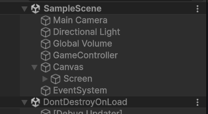
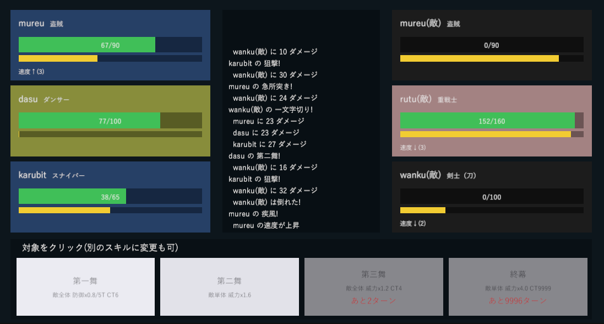
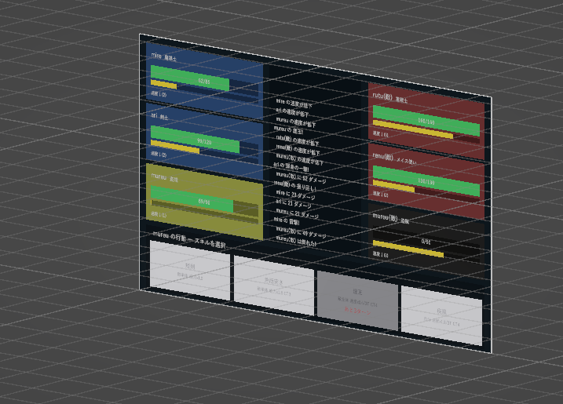

Unityで作成したターン制ゲーム




概要
UnityとC#を使って作成したターン制のゲームです．プレイヤーとコンピュータが交互に行動して戦う，コマンド選択式のゲームです． Unityを触ってみたいと感じていたので，GoogleColabで作成したターン制ゲームをUnityでリメイクしました．
実際の動画
使用技術
- 使用技術: Unity 6.3 LTS, C#
- 制作期間: 30時間
工夫した点・苦労した点
初めてUnityでゲームを作るということで，GoogleColabで作成したもののリメイクを作成しました．複雑なスキルは再現が難しく，キャラも複数となったので大多数のキャラのスキルはAIを用いて作成しました．また，キャラの調整がとても難しいと感じました． キャラを追加しやすいようにプログラムを作成しました．
リメイク元の作品に飛ぶ →